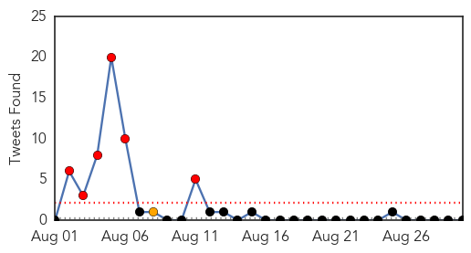
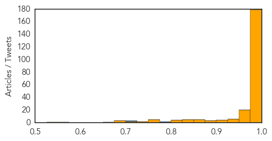

Unknown
30-Day Web Trend
1 alerts, 0 warnings

30-Day Twitter Trend
4 alerts, 0 warnings

Article Locations

Article Confidences

Top Articles:
- 0.917
- Chicago Tribune
- 0.866
- Australia to join multinational weapons drop into Iraq
- 0.866
- Obama, Harper discuss NATO summit, Iraq in phone call -White House
- 0.866
- South Africa condemns apparent coup by army in Lesotho
- 0.866
- Russian minister to leave Bratislava after stopoff caused by Polish transit refusal
- 0.816
- GBHS Worker Selected To Control Spread Of Virus In Saudi Arabia
- 0.808
- Zimbabwe's Infant, Maternal Mortality Rates Drop - Zimbabwe
- 0.706
- U.S.-Mexico Health Officials Increase Search for Fugitive Santa Maria Man with Contagious Tuberculosis
- 0.705
- Dozens of UN peacekeepers still held by Syrian jihadists
- 0.705
- UN peacekeepers battle jihadists in Golan Heights
- 0.705
- Kerry calls for 'coalition of nations' to battle IS militants
- 0.705
- EU leaders meet in Brussels to seek a response to Russia
- 0.705
- Poland's Tusk, Italy's Mogherini set for top EU jobs
- 0.705
- Egypt sentences Brotherhood leader Badie to life
- 0.705
- Ceasfire allows Gaza families to relax on the beach
- 0.705
- Austerity row overshadows French Socialists' annual rally
- 0.699
- Drug resistant TB on increase in Lango region
- 0.680
- Stomach bug outbreak at Pine Middle School
- 0.618
- Golan Peacekeepers Safe, Not in Direct Contact
- 0.574
- St. John Parish water system's reporting of chlorine data comes under scrutiny
- 0.547
- Curb anaemia deaths in Mussoorie: Harsh Vardhan to officials
- 0.547
- Curb anaemia deaths in Mussoorie: Harsh Vardhan to officials
- 0.543
- 160 put under watch in Nigeria as Ebola kills doctor
- 0.535
- East Africa and Horn in dire need of food aid
Top Tweets:
- 0.610
- UE advierte contra un "punto de no retorno" en Ucrania: El presidente de la Comisión Europea, José Manuel Dura... http://t.co/eS6xzcFjM3
Ebola
30-Day Web Trend
8 alerts, 20 warnings

30-Day Twitter Trend
22 alerts, 7 warnings
Article Locations
Article Confidences
Top Articles:
- 1.000
- Ebola death toll driven by poverty, racism
- 1.000
- WRAPUP 3-Ebola outbreak reaches Senegal, riots break out in GuineaHealthcare
- 1.000
- DR Congo bans handshakes after Ebola outbreak
- 1.000
- Health workers strike at major Ebola clinic in Sierra Leone
- 1.000
- Gatineau girl being tested for Ebola virus
- 1.000
- Ebola must not cross Zambia’s borders
- 1.000
- Ebola: Killing Thousands
- 1.000
- First Ebola case reported in Senegal as rumour sparks riot in Guinea
- 1.000
- Health workers strike at major Ebola clinic
- 1.000
- Dogs are digging up the corpses of Ebola victims
- 1.000
- Confirmed: First Ebola Case Recorded In Senegal
- 1.000
- Senate voices concern about communicable diseases and border security
- 1.000
- Ebola virus spreads to Senegal
- 1.000
- WRAPUP 1-Health workers strike at major Ebola clinic in Sierra Leone
- 1.000
- Ebola outbreak reaches Senegal, riots break out in Guinea
- 1.000
- Ebola outbreak: Health workers strike in Sierra Leone, Liberia lifts quarantine measures
- 1.000
- Senegal confirms first case of Ebola
- 1.000
- Ebola hits 5th WAfrican state as Senegal confirms first case
- 1.000
- Sudan media banned from reporting about Ebola - News
- 1.000
- Ebola Hits 5th WAfrican State as Senegal Confirms First Case — Naharnet
- 1.000
- Ebola is rapidly mutating as it spreads across West Africa
- 1.000
- Ebola Outbreak Could Infect 20,000 People, U.N. Says
- 1.000
- Hopes raised for ebola treatment after monkey tests
- 1.000
- Ebola outbreak: Five co-authors of latest study killed by virus before their research was published
- 1.000
- HeraldNet.com - Nation & World
- 1.000
- Senegal confirms first Ebola case as outbreak hits 5th WAfrican country
- 1.000
- Ebola drug Zmapp is 100% effective at treating monkeys with the disease, scientists declare
- 1.000
- Ebola spreads to Senegal - but quarantine is lifted in slum area of Liberian capital
- 1.000
- Ebola outbreak: Senegal confirms first case
- 1.000
- Ebola tests negative for Gatineau girl who remains in isolation
- 1.000
- Ebola hits 5th West African state as Senegal confirms first case
- 1.000
- Increase in weekly Ebola cases: WHO
- 1.000
- Ebola takes big toll on already poor health care
- 1.000
- Ebola hits 5th W. African state as Senegal confirms 1st case
- 1.000
- Senegal confirms its 1st case of Ebola, underscoring W Africa outbreak is not under control
- 1.000
- 10 visitors from Ebola-hit areas enter Vietnam daily: health dept
- 1.000
- UN warns Ebola could affect 20,000
- 1.000
- Sudan Ministry denies Ebola case in West Darfur - Sudan
- 1.000
- Ebola hits 5th W African state as Senegal confirms first case - 18 monkeys given experimental drug recover - Kuwait Times
- 1.000
- Ebola reaches another country
- 1.000
- No Ebola cases confirmed in S. Africa
- 1.000
- You May Have a New Strain of Ebola and Test Negative
- 1.000
- UN health agency names countries facing risk of Ebola virus spread
- 1.000
- Sudan denies Ebola outbreak
- 1.000
- Ebola: government response
- 0.999
- Ebola jumps to Senegal as case confirmed in Guinean man
- 0.999
- Ebola takes big toll on already poor health care
- 0.999
- Ebola takes big toll on already poor health care
- 0.999
- Ebola test underway for Gatineau, Que., child in isolation
- 0.999
- France’s Inserm in Talks With Guinea on Ebola Drug Trial for Ill
Showing top 50 articles...
Top Tweets:
- 0.785
- RT: Keen to prevent the spread of ebola, these Sierra Leonean-American celebs created this. Please share! endebolanow http:/…
- 0.715
- what, if there *were* ebola drugs, the outbreak would be stanched? even treatable diseases kill scores